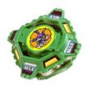

Draciel Metal Ball Defenser
Note: Since this article was published, significant new and more accurate information has come to light, and as a result, this article must be updated. Please do not take all of the information here as the truth, as more extensive testing on the parts of this Beyblade has since provided information which conflicts with and/or expands upon the understanding of these parts this article was based upon. However, the Overall section has been updated based on this new information, and as such is a reliable source of information. Updates will be posted on the main page when completed.
| Draciel Metal Ball Defenser | |
|  | |
| Number: | 32 |
|---|---|
| System: | 4-Layer |
| Type: | Defense |
Contents
Attack Ring (AR): Max Shield
- Weight: 5 grams
The AR of Draciel Metal Ball Defenser has four almost straight edged panels around it. Because of this, it it not ideal for defense due to the amount of friction given off from the straight edged panels when spinning. Due to its small size it can be used in a Weight Disk attack customization, but not as effectively as Try Cutter, the AR of Polta and Ultimate Saizo.
Weight Disk (WD): Heavy
See Heavy (WD).
Blade Base (BB): Metal Ball Base
- Weight of BB Only: 9 grams
- Weight of BB with 1 set of metal balls (Original Weight): 11 grams
- Weight of BB with 2 sets of metal balls: 13 grams
Metal Ball Base is the most valuable part in this Beyblade. It has the screw-in base from the 4-layer system which gives the impression of it being out of date, but it is still a good defense type base in due to the additional weight that can be added to it. MBD comes with one set of metal balls that go inside of the BB.
When spinning rapidly, the metal balls in MBD's base roll up the ramps inside to a position closer to the outside of the blade. This gives a higher center of gravity and increased stability, due to a more uniform distribution of overall weight. As the blade slows down, the force of gravity overcomes the centrifugal force and the metal balls roll back down the ramps towards the center of the blade. This hampers balance and stability, but increases spin time. The concept is to essentially remain motionless (in the lateral plane) for the first half of the battle, and then outlast the opponent's blade near the end. However, the design is somewhat flawed, in that the ramps aren't very steep at all, so nearly any rotational motion causes the metal balls to slide up the ramps.
Adding Metal Balls
As stated before, Draciel Metal Ball Defenser comes with one set of metal balls which is commonly known as the Draciel gimmick. It is possible to add one additional set of Metal Balls increasing the BB weight by almost 20% more. By loosening the screw in the BB, it'll slightly loosen the opening to where the metal balls go in. When it is loose enough for the metal balls to go in, inset them in and then re-tighten the screw back.
In addition to increasing the weight of the BB, it also changes how the metal balls function. Instead of constantly changing between a higher spin rate to a central weight focus with only one set of metal balls, it combines the two features together providing a more solid Defense type base which prevents KOs.
Use in a Defense Customization
Being a Draciel Beyblade capable of holding up to two more Metal Balls, it has the weight the advantage in a defense type combination. Here is an example of a defense type combination:
- AR: War Lion (Galeon)
- Secondary AR: War Lion (Galeon)
- WD: Wide Survivor
- BB: Metal Ball Base (w/ 4 metal balls) (Draciel Metal Ball Defenser)
The element which makes this combination durable is how all of the parts work together in synergy. War Lion (both AR and Secondary AR) nearly aligns perfectly with the Wide Survivor WD to form a circle. Aside from that, the Secondary AR spins freely reducing the amount of force given on contact when hit. The problem with this combination is that the AR, Secondary AR, and WD together generally doesn't have good balance on its own, but the Metal Ball Base makes up for it by balancing it out by its weight and the amount of spin rate it has on its own.
Use in a Compact Customization
Compared to the updated SG Metal Ball Base (Draciel S), Metal Ball Base has one advantage over it: size. Because it is smaller in shape with an above average amount of weight, it is one of the ideal bases used for compact combinations. Here is an example:
- AR: Tiger Defenser (Driger S)
- WD: Ten Heavy
- BB: Metal Ball Base (w/ 4 metal balls) (Draciel Metal Ball Defenser)
Overall
Given a full complement of metal balls, Metal Ball Base is both a solid, competitive Blade Base and also very useful for those needing a reliable opponent against which to test a wide range of combinations, and in addition to this, the Heavy Weight Disk is a nice touch. However, the fact it only comes with two metal balls means that unless a Blader is able to source another two, Draciel Metal Ball Defenser is not all that worthwhile compared to alternatives such as Driger S. This Beyblade is not a must-have, but it is nevertheless a very welcome addition to any collection.